ControlPanel¶
General¶
Al iniciar el ControlPanel, el modelo debe estar listo para operar: batería cargada y conectada, modelo y control remoto encendidos y vinculados. Los servos deben poder moverse.
El sistema se detecta automáticamente y todos los módulos se cargan y muestran.
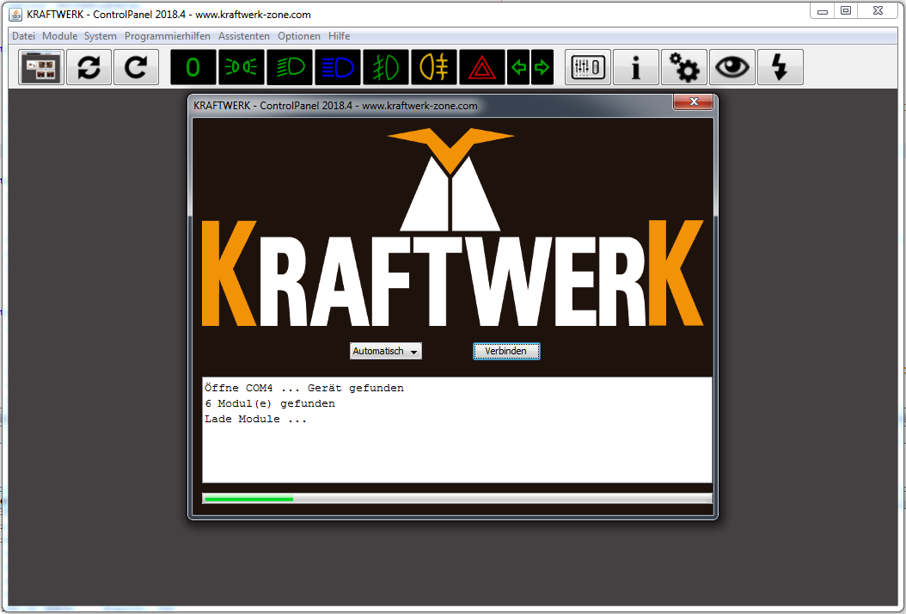
image72.png
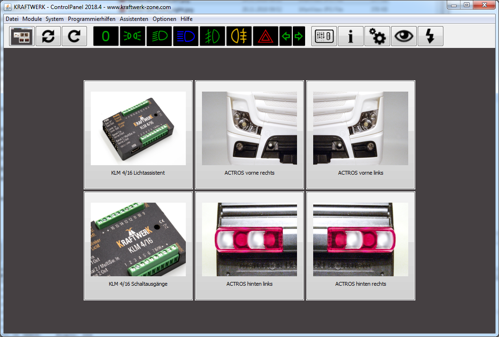
image73.png
Vista general del módulo¶
Al hacer clic en un módulo se accede a la vista general de salidas. Allí se pueden asignar nombres y configurar las velocidades de encendido/apagado. Según la función, varían los parámetros (ver capítulo 7 "Funciones").
Los cambios se guardan con el icono de disquete. El signo de interrogación muestra textos de ayuda, el ojo activa la salida en el modelo para facilitar las asignaciones.
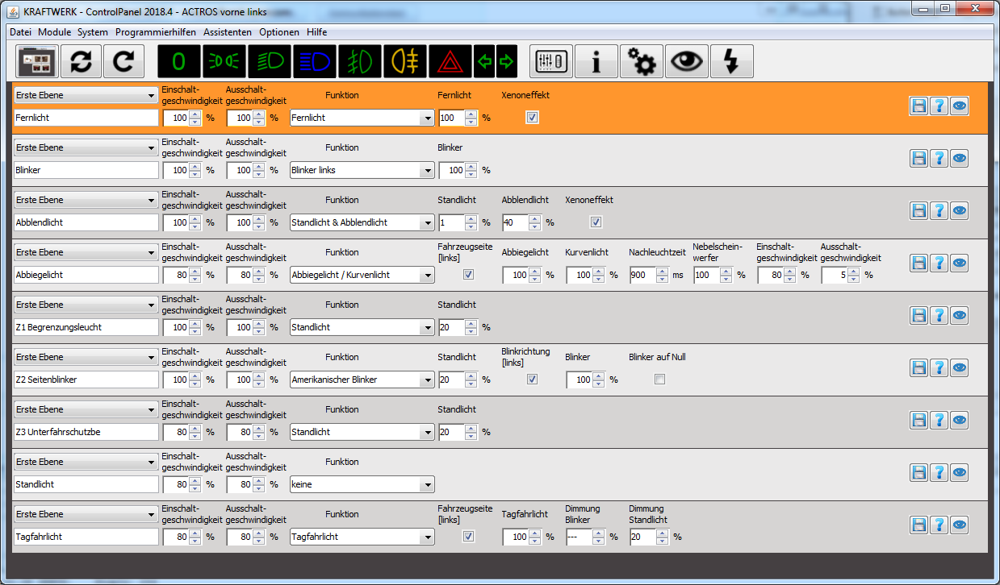
image74.png
Doble asignación¶
Cada salida puede asignarse doblemente. Ejemplo:
- Primer nivel: luz de posición y luz de carretera
- Segundo nivel: intermitentes de emergencia
Se puede configurar el cambio entre niveles.
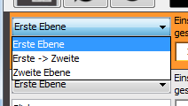
image75.png
hasta
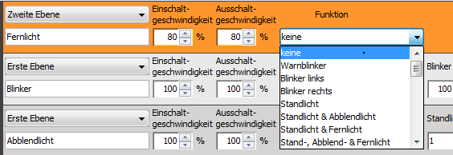
image77.png
Menú¶
| Función | Descripción |
|---|---|
| Archivo | Reconectar sistema, recargar módulo, descartar cambios temporales, guardar y abrir módulos. |
| Módulos | Mostrar y cargar todos los módulos. |
| Configuración del sistema | Configurar el comportamiento básico del sistema. |
| Información del dispositivo | Información sobre módulos, versiones de software, actualizaciones, ajustes de fábrica. |
| Análisis del sistema | Autodiagnóstico, prueba de comunicación, encontrar módulos dañados. |
| Asistente para aprender canales | Ayuda para aprender los canales. |
| Registro | Comunicación entre ControlPanel y sistema para búsqueda de errores. |
| Asistente de datos en vivo | Muestra datos en tiempo real como movimientos de palancas y estados de conmutación. |
| Asistente de luces de emergencia y efecto KnightRider | Ayuda en la configuración a través de varias salidas. |
| Configuraciones | Opciones avanzadas para configuraciones expertas (usar con precaución). |
| Información | Información sobre ControlPanel e informes de errores. |
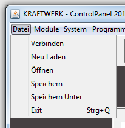
image78.png
Barra de herramientas¶
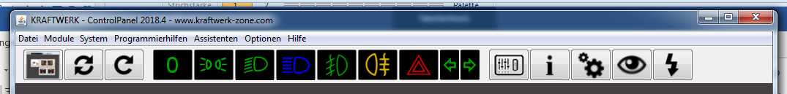
image85.png
- Mostrar pantalla principal
- Reconectar sistema
- Recargar módulos
- Luz apagada / luz de posición / luz de cruce / luz de carretera / antiniebla delantera / luz antiniebla trasera encendido/apagado
- Datos en vivo, información del dispositivo, configuración del sistema
- Mostrar salida en vivo, abrir actualización en vivo
Datos en vivo¶
Permite ver en tiempo real la posición de las palancas y estados de conmutación. Se pueden aprender canales y activar/desactivar funciones.
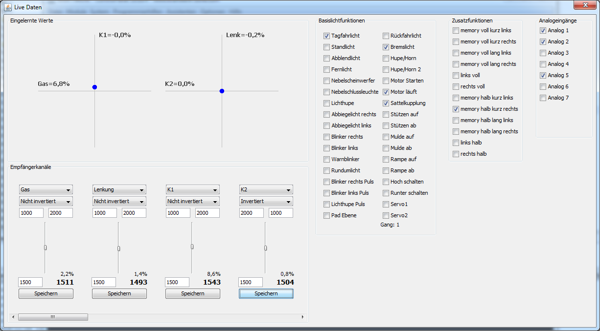
image86.png
| [[IMAGE_078]] | Cuando los canales están correctamente aprendidos, los puntos azules deben seguir los movimientos de su palanca. Si usa CPPM, IBUS o SBUS, los canales también deben estar correctamente asignados. |
| 665544332211 [[IMAGE_079]] | Aquí se muestran todos los canales tal como se miden realmente. No se consideran las informaciones de aprendizaje, es decir, las barras pueden moverse hacia abajo aunque la palanca se mueva hacia arriba.1: Cambiar la asignación de canales solo debe hacerse si se usa CPPM, IBUS o SBUS.2-5: Estos valores se establecen durante el proceso de aprendizaje. 1000 – 2000 y 1500 posición central son valores estándar. Los valores pueden ajustarse y guardarse.6: Desplácese hacia la derecha para ver los valores de otros canales (solo relevante para CPPM, IBUS, SBUS) |
| El lado derecho de los datos en vivo muestra los estados de conmutación. Algunos pueden establecerse haciendo clic. Los tres grupos funcionales funciones básicas de luz, funciones adicionales y analógico pueden usarse como interruptores en las funciones, por ejemplo, en la función interruptor simple. [[IMAGE_080]] [[IMAGE_081]] |
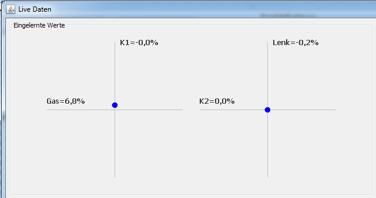
image87.png
Los puntos azules deben seguir los movimientos de la palanca. En CPPM, IBUS o SBUS los canales deben estar correctamente asignados.
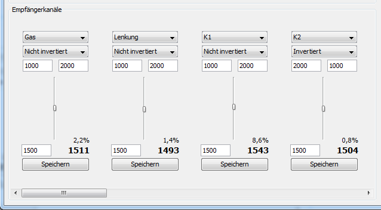
image88.png
El lado derecho muestra estados de conmutación que también pueden establecerse haciendo clic. Los tres grupos funcionales luz básica, funciones adicionales y analógico pueden usarse como interruptores.
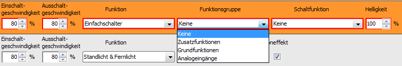
image90.png
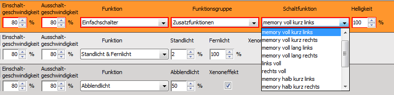
image91.png